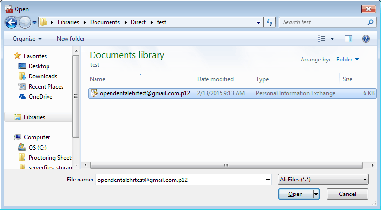

Email Certificate Install
Encrypted Email is obsolete. Open Dental now offers
Email security certificates are required for Encrypted Email. Once you have obtained an email security certificate and downloaded the pfx file to your computer, public and private certificate keys must be installed on each computer that will send/receive encrypted email. Also see Email Certificate.
On a workstation, there are three folders that pertain to security certificates:
- NHINDAnchors: Certificates that you trust. Contains certificates for trusted certificate authorities such as Comodo, and also certificates for specific email addresses which are trusted. If a certificate for a certificate authority is in here, then every certificate created by that authority is also trusted. For example, if you have the Comodo anchor certificate, then you automatically trust any and all certificates created by Comodo.
- NHINDExternal: Public certificates for email addresses which you have sent to before or trusted before. These certificates are public information and safe to share with others. These certificates are used to encrypt outgoing messages.
- NHINDPrivate: Your private key certificates. These certificates are used to decrypt incoming messages which were encrypted with your public key. Do not share your private certificates with anyone, or else they could use your private key to read your encrypted messages.
If these folders do not already exist, they will be created when you launch and login to Open Dental
Install Private Keys on a Workstation:
- In Windows, click Start. In the Search programs and files field, type mmc then press Enter to run the Microsoft Management Console.

- Click File, Add/Remove Snap In.

- Double click on Certificates.

- Select Computer Account and click Next.
- Click Finish, then OK. Certificate folders will be visible in tree view.

- Import the .pfx or .p12 file to the NHINDPrivate folder:
- Right click on the NHINDPrivate folder, then click All Tasks, Import.
- Browse for the certificate file on your computer and complete the wizard to install the certificate. Set the file filter to All Files(*.*) to locate the pfx or p12 file.
- We recommend marking the key as exportable.
- You will need the key's password. It will be the same password you entered when saving the file.The files will display in the Certificates folder.
 - Export the public key certificate. In the NHINDPrivate/Certificatesfolder, right click on the public key (e.g. xxxx @email.com), then click All Tasks, Export. Follow the wizard to export the public key as a .cer file. You may be asked if you'd like to export the private key. If so, choose no.

- In the NHINDAnchors and NHINDExternal folders:
- Right click on the NHINDAnchors or NHINDExternal folder, then click All Tasks, Import.
- Follow the wizard to import the public key .cer file saved in step 7.
Trust of Security Certificates: Trust of security certificates is computer-specific. If you send an email from the computer you use as your Email Inbox (Computer Name to Retrieve New Email From in Email Setup), every time you send email, the recipient is added to your trusted list automatically. If you receive a message from unknown recipient that is not in your trusted list, when you open email and decrypt a message, you will be prompted to add the recipient to your trusted list.